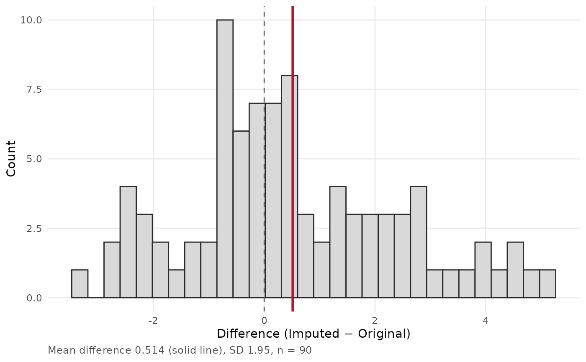
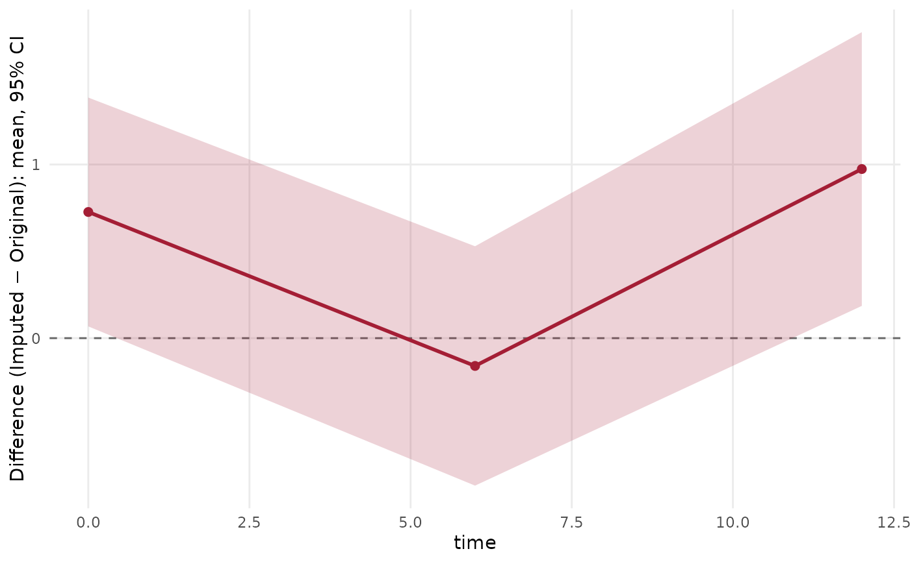
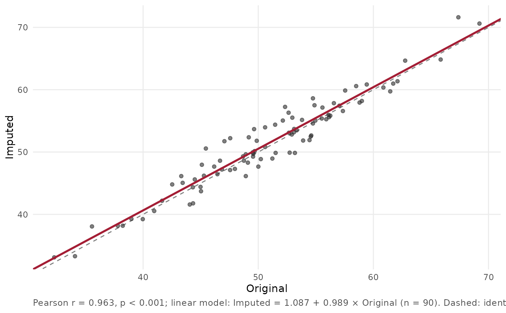

Paired Comparison of Two Versions of a Measurement
Source:R/paired_comparison.R
paired_comparison.RdTools for comparing two versions of the same quantity measured on the same rows, such as an index computed from the original data and from imputed data. The difference is always `second - first` (for example imputed minus original).
Usage
compare_distributions_ks(x, y, labels = c("Original", "Imputed"), title = NULL)
compare_paired_correlation(
data,
first,
second,
labels = c("Original", "Imputed"),
id_col = NULL,
digits = 3,
title = NULL
)
paired_diff_tests(data, first, second, group_col = NULL, conf_level = 0.95)
paired_diff_histogram(
data,
first,
second,
labels = c("Original", "Imputed"),
group_col = NULL,
bins = 30,
title = NULL
)
paired_diff_ribbon_by_group(
data,
first,
second,
group_col,
labels = c("Original", "Imputed"),
ribbon = c("ci", "sd", "quantile"),
conf_level = 0.95,
title = NULL
)
paired_diff_ridgeline(
data,
first,
second,
group_col,
labels = c("Original", "Imputed"),
title = NULL
)Arguments
- x, y
Numeric vectors, the two samples (missing values are dropped). They need not have the same length.
- labels
Display names of the two versions, in the order `first`, `second`.
- title
Optional title.
- data
A data frame with one row per paired observation.
- first, second
Names of the two numeric columns (for example original and imputed).
- id_col
Optional subject column. When given, the fitted line is the fixed-effect line of `second ~ first + (1 | id)` ([lme4::lmer()]); a model that fails or is singular falls back to the linear model, with a message.
- digits
Decimals in the caption.
- group_col
Optional grouping column (a time point, a cohort). Required for the ribbon and ridgeline plots.
- conf_level
Confidence level of the interval of the mean difference (default 0.95).
- bins
Number of histogram bins (default 30).
- ribbon
What the band around the mean difference shows: `"ci"` (default; the t confidence interval of the mean at `conf_level`), `"sd"` (mean plus or minus one standard deviation) or `"quantile"` (the 2.5th to 97.5th percentile of the differences, around the median line).
Value
See each function.
`compare_distributions_ks()`: a `patchwork` of the ECDF and density panels (needs the patchwork package), with the [stats::ks.test()] result in `attr(, "ks")`.
`compare_paired_correlation()`: a `ggplot2` object; the fitted model is in `attr(, "model")` and the Pearson test in `attr(, "cor_test")`.
`paired_diff_tests()`: a tibble with one row overall or per group: `group` (if grouped), `n`, `mean_first`, `mean_second`, `mean_diff`, `sd_diff`, `conf.low`, `conf.high`, `t_statistic`, `p_t`, `median_diff` and `p_wilcoxon`. A group with fewer than two pairs, or with identical differences, has missing test results.
`paired_diff_histogram()`, `paired_diff_ribbon_by_group()`, `paired_diff_ridgeline()`: a `ggplot2` object.
Details
* `compare_distributions_ks()`: empirical distribution functions and densities of two samples with the two-sample Kolmogorov-Smirnov test. * `compare_paired_correlation()`: scatter of the second version against the first with the line of identity and a fitted regression line (a linear model, or a random-intercept mixed model when `id_col` is given). * `paired_diff_tests()`: paired t-test and Wilcoxon signed-rank test, overall or per group. * `paired_diff_histogram()`, `paired_diff_ribbon_by_group()`, `paired_diff_ridgeline()`: the distribution of the paired differences, overall, along an ordered group (time) and as ridgelines per group.
Reading the tests
The Kolmogorov-Smirnov test treats the two samples as independent. When they are two versions of the same rows they are not, and the test is then conservative for a shift; use it as a description of how far apart the distributions are and `paired_diff_tests()` for the paired question. With ties (rounded values) the KS p-value is approximate. With repeated measurements per subject, the paired tests treat the rows as independent; pass one row per subject, or use `compare_paired_correlation(id_col = )` for a model that accounts for the subject.
Examples
set.seed(1)
d <- data.frame(id = rep(1:30, 3), time = rep(c(0, 6, 12), each = 30), original = rnorm(90, 50, 8))
d$imputed <- d$original + rnorm(90, 0.5, 2)
paired_diff_tests(d, "original", "imputed", group_col = "time")
#> # A tibble: 3 × 12
#> group n mean_first mean_second mean_diff sd_diff conf.low conf.high
#> <dbl> <int> <dbl> <dbl> <dbl> <dbl> <dbl> <dbl>
#> 1 0 30 50.7 51.4 0.727 1.76 0.0678 1.39
#> 2 6 30 51.1 50.9 -0.160 1.85 -0.849 0.529
#> 3 12 30 50.9 51.9 0.974 2.11 0.186 1.76
#> # ℹ 4 more variables: t_statistic <dbl>, p_t <dbl>, median_diff <dbl>,
#> # p_wilcoxon <dbl>
paired_diff_histogram(d, "original", "imputed")

paired_diff_ribbon_by_group(d, "original", "imputed", group_col = "time")

compare_paired_correlation(d, "original", "imputed")
